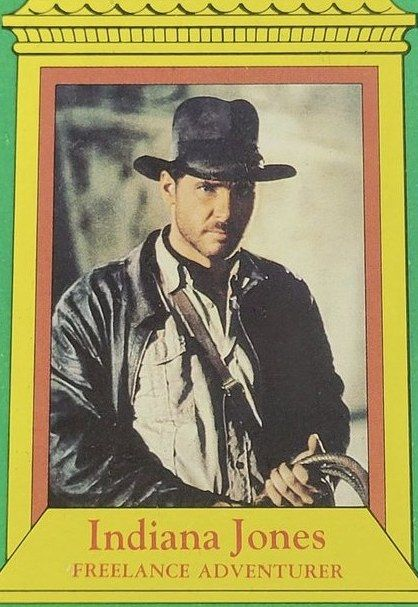
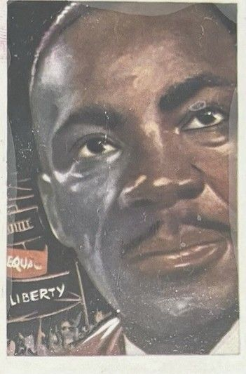
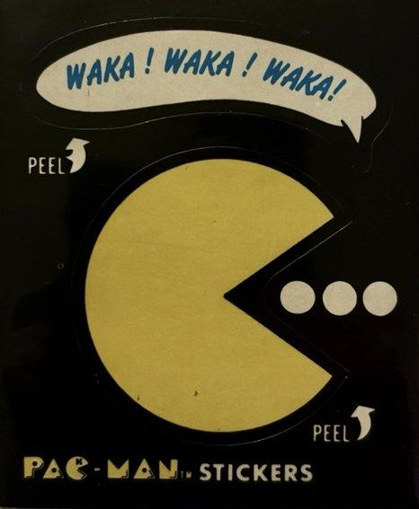
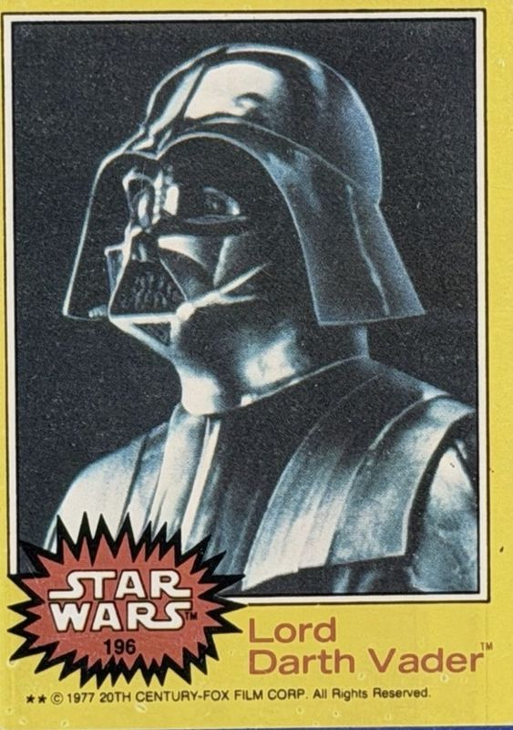
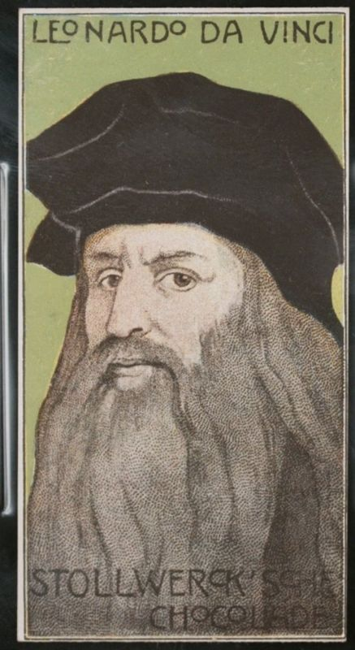
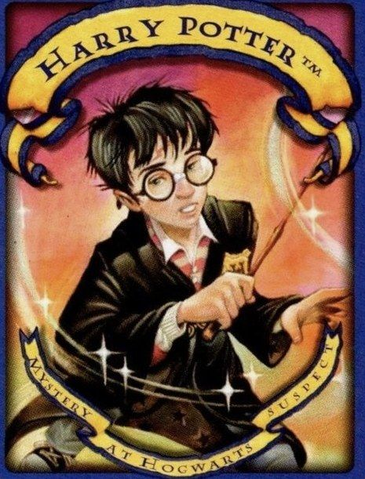
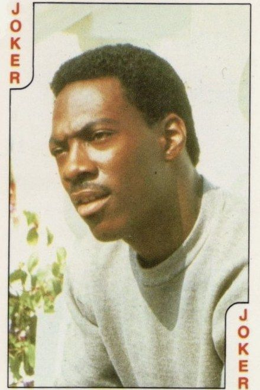
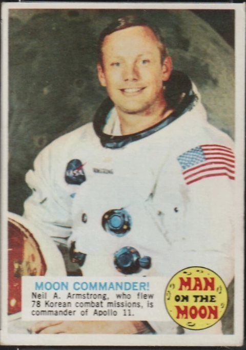
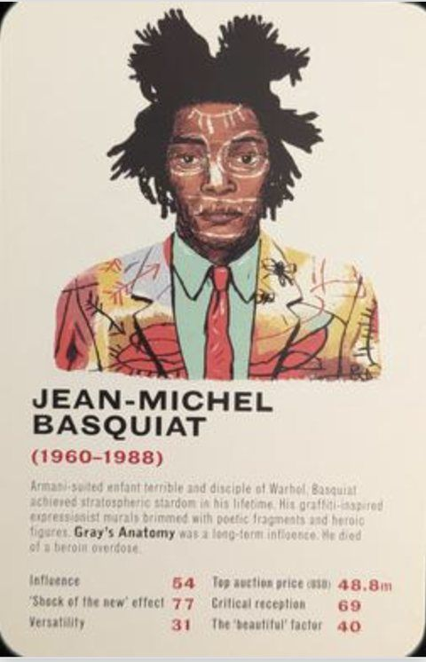
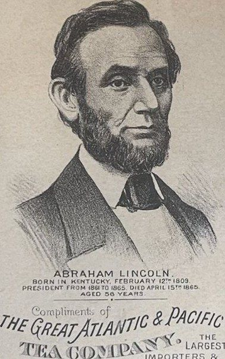
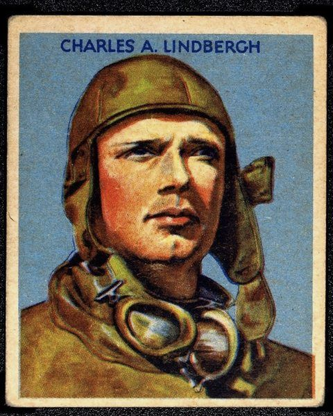
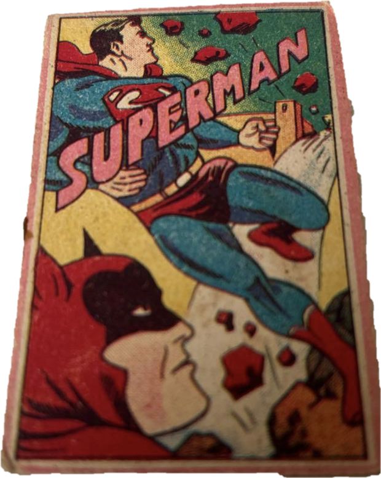
Obsessive, footnoted research into the earliest releases, obscure oddities, and overlooked corners of the nonsports card hobby.
With two of these cards selling for $1,000 each, a closer look at the ten Harry Potter character cards in the set, ranked on artwork, appeal, and place in Harry Potter trading card history.
A full survey of every Harry Potter card and card-adjacent release from 2000 and 2001, from Mattel board game cards to the WOTC trading card game, with sourcing, aesthetics ratings, and a personal ranking.